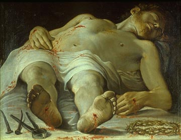
de aloés e mirra, Arimatéia foi conversar com Pilatos e pedir o Corpo do SENHOR.
 José de Arimatéia que
pertencia ao Conselho Judeu, mas em segredo simpatizava com a doutrina de JESUS,
desceu para a cidade em companhia de Nicodemos e enquanto este foi comprar
aproximadamente 30 quilos de uma mistura aromática
José de Arimatéia que
pertencia ao Conselho Judeu, mas em segredo simpatizava com a doutrina de JESUS,
desceu para a cidade em companhia de Nicodemos e enquanto este foi comprar
aproximadamente 30 quilos de uma mistura aromática
Ainda na cidade, Arimatéia comprou um grande lençol de linho branco rústico, com 4,36 metros de comprimento por 1,10 metros de largura, assim como tiras de pano, também de linho branco, para envolver o Corpo de JESUS, conforme o costume judeu.
Voltaram ao Calvário e retiraram o SENHOR da Cruz, com o auxílio de alguns Discípulos e das Santas Mulheres.
Maria, Sua MÃE, permanecia triste e inconsolável, com os olhos fixos em seu Divino FILHO. Foi assim, que não conseguindo mais controlar as suas emoções, tão abaladas por todos aqueles abomináveis sofrimentos DELE, ao ver o Corpo inocente e puro de JESUS, profanado, aviltado e injuriado, chorou amargamente, um choro longo e dolorido, por tanta indignidade e incompreensão.
José de Arimatéia possuía um túmulo novo, mandado cortar na rocha, bem próximo ao Calvário. Era um túmulo onde ninguém tinha sido sepultado. Foi nele que colocaram o SENHOR.
E tudo foi feito
muito às pressas: o transporte até o sepulcro e a unção do Corpo com aloés
e mirra, antes de envolve-lo com os panos mortuários, porque logo ao aparecer
das primeiras estrelas no céu, de acordo com a lei judaica, começava o tempo
sagrado da Páscoa. Por esta razão, não puderam fazer convenientemente o
preparo do Corpo de JESUS. Concluíram rapidamente o serviço e rolaram uma
grande pedra, fechando o sepulcro. Este foi o motivo porque as Santas
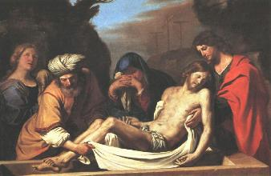
No sábado (dia santificado dos judeus), enquanto as pessoas rezavam e repousavam respeitando a lei, os sacerdotes, escribas e anciãos do povo, que estavam unidos na mesma trama macabra, lembraram as palavras DELE de ressuscitar ao terceiro dia. Então colocou de guarda no sepulcro, uma patrulha com três soldados, justificando que eles trabalhavam no Templo, mas na realidade, eles imaginavam evitar que os Apóstolos viessem e retirassem o Corpo DELE, e depois dissessem que ELE tinha Ressuscitado. E para completar, selaram a pedra que fechava o túmulo, com uma argamassa especial e resistente.

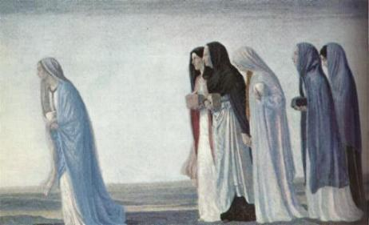
 Domingo, logo que o sol surgiu,
as Santas Mulheres levando os aromas, foram ao sepulcro para fazerem a unção do
Corpo do SENHOR. Mas, pelo caminho, comentavam:
Domingo, logo que o sol surgiu,
as Santas Mulheres levando os aromas, foram ao sepulcro para fazerem a unção do
Corpo do SENHOR. Mas, pelo caminho, comentavam:
“Quem rolará a
pedra da entrada do túmulo para nós?”(Mc
16, 3) 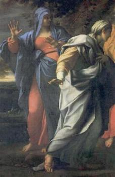
Sozinhas não temos forças para removê-la. E será que os guardas permitirão?
Entretanto, chegando ao túmulo de JESUS, não viram os soldados e observaram que estava aberto e vazio. Imediatamente Maria Madalena desceu o morro correndo para avisar os Apóstolos, enquanto as outras mulheres permaneceram no local.
Pedro e João, sem demora, rumaram para a tumba DELE. E puderam constatar que estava no chão o pano de linho que serviu para amarrar a cabeça a fim de manter a boca fechada e o Lençol Mortuário (conhecido como Santo Sudário) estava dobrado e colocado na cabeceira da saliência na rocha, em forma de cama. Pedro recolheu e guardou diligentemente aquelas preciosas relíquias.
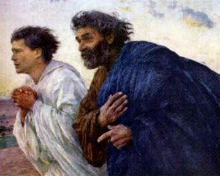
Na cidade, os guardas que tinham vigiado o túmulo, foram encontrar-se com o Sumo Sacerdote e dizer-lhe os fatos ocorridos durante a noite. Caifás, depois de confabular com os outros, resolveu gratificar regiamente os três soldados recomendando que espalhassem a notícia de modo diferente:
“Dizei que os seus Discípulos vieram de noite, enquanto dormíeis, e O roubaram. Se isto chegar aos ouvidos do Governador, nós o convenceremos e vos deixaremos sem complicação”. (Mt 28, 13-14)

 Estando próxima a sepultura
de JESUS, Madalena teve sua atenção despertada para um ruído que vinha de
dentro. Olhou e viu dois
Estando próxima a sepultura
de JESUS, Madalena teve sua atenção despertada para um ruído que vinha de
dentro. Olhou e viu dois Anjos, vestidos com túnicas brancas, sentados no lugar
onde o SENHOR esteve deitado, um na cabeceira e outro aos pés. Um dos Anjos
conversando com ela, consolou dizendo-lhe que não chorasse, porque na verdade
ela devia alegrar-se, uma vez que ELE não estava morto, ressuscitou e está
vivo. A seguir, este Anjo saiu da Cova Funerária e sentou-se numa pedra do lado
de fora, naquela mesma que foi utilizada para fechar o sepulcro e contou para
elas o que tinha acontecido: "Houve um forte tremor de terra, que fez rolar essa
pedra, abrindo o túmulo, ao mesmo tempo em que uma luz forte e brilhante
projetou os guardas contra o solo e impôs-lhes um profundo sono, enquanto JESUS
Ressuscitava." E acrescentou em tom solene:
Anjos, vestidos com túnicas brancas, sentados no lugar
onde o SENHOR esteve deitado, um na cabeceira e outro aos pés. Um dos Anjos
conversando com ela, consolou dizendo-lhe que não chorasse, porque na verdade
ela devia alegrar-se, uma vez que ELE não estava morto, ressuscitou e está
vivo. A seguir, este Anjo saiu da Cova Funerária e sentou-se numa pedra do lado
de fora, naquela mesma que foi utilizada para fechar o sepulcro e contou para
elas o que tinha acontecido: "Houve um forte tremor de terra, que fez rolar essa
pedra, abrindo o túmulo, ao mesmo tempo em que uma luz forte e brilhante
projetou os guardas contra o solo e impôs-lhes um profundo sono, enquanto JESUS
Ressuscitava." E acrescentou em tom solene:
“Não temais! Sei que estais procurando JESUS, o crucificado. ELE não está aqui, pois ressurgiu, conforme havia dito. Vinde ver o lugar onde ELE jazia. Ide já contar aos Discípulos que ELE ressurgiu dos mortos, e que ELE vos precede na Galiléia. Ali o vereis! Vede bem, eu vo-lo disse!”(Mt 28,5-8)
As Santas Mulheres desceram com muita pressa a ladeira do Gólgota, para contar a notícia aos Apóstolos. Todavia, na base do morro diminuíram a pressa e quase chegaram a parar, quando comentavam o fato entre si... Ficaram receosas quanto à reação dos Discípulos, que podiam não acreditar nelas. Isto, por causa do costume judeu, que viam na mulher um ser secundário. Pensavam elas: “os Discípulos poderiam questionar: Pedro e João também estiveram no sepulcro, porque o Anjo não conversou com eles?”
E assim, repletas de pensamentos negativos ficaram sem ânimo de prosseguirem, levando aos Discípulos aquelas importantes novidades.
Entretanto, eis que aconteceu uma surpresa extraordinária: JESUS veio ao encontro delas e lhes disse:
“Alegrai-vos”. (Mt 28, 9)
Elas não O reconheceram naquele
momento. Todavia, Madalena que estava um 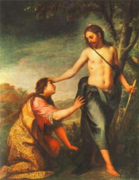
“Não temais! Ide anunciar a meus irmãos que se dirijam para a Galiléia; lá me verão”.(Mt 28, 10)
“Não ME retenhas, pois ainda não subi ao PAI. Vai, porém, a Meus Irmãos e dize-lhes: Subo a Meu PAI e vosso PAI; a Meu DEUS e vosso DEUS”.(Jo 20, 17)
Quando o SENHOR desapareceu, elas não cabiam em si de tanta alegria. Às pressas foram ao encontro dos Apóstolos e com grande euforia, transmitiram-lhes as novidades. Mesmo assim, apesar de todo empenho das Santas Mulheres, não conseguiram convencer o coração dos Discípulos, que permaneceram escondidos, com grande medo dos homens do Sumo Sacerdote Caifás.
Todavia a notícia espalhou... O murmúrio generalizou. O assunto dominava em todos os locais: JESUS Ressuscitou.
ELE apareceu a Pedro, também a Maria, sua MÃE, aos Discípulos de Emaús que desapontados com a morte DELE voltavam para casa, e aos Apóstolos reunidos no Cenáculo em Jerusalém. Nesta oportunidade ELE disse:
“Como o PAI Me enviou, também EU vos envio”.E soprou sobre eles acrescentando: “Recebei o ESPÍRITO SANTO. Aqueles a quem perdoardes os pecados ser-lhes-ão perdoados, aqueles aos quais não perdoardes, ser-lhes-ão retidos”. (Jo 20, 21-23)
Procedendo assim, o SENHOR criou o Sacramento da Confissão ou Reconciliação, que perdoa as transgressões da humanidade. Através do ESPÍRITO SANTO, os sacerdotes e bispos concedem o perdão Divino aos fieis que arrependidos de seus pecados, querem purificar a alma e viver uma vida em santidade, em comunhão de amor com o CRIADOR. Só através da Confissão Sacramental sincera as pessoas alcançam o "estado de graça" e podem receber JESUS na Sagrada Comunhão.
Tomé não estava junto com os
Apóstolos naquele primeiro domingo depois da 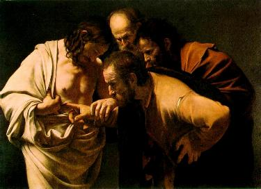
“Se eu não vir em suas Mãos o lugar dos cravos e se não puser o meu dedo no lugar dos cravos e minha mão no seu lado, não acreditarei”. (Jo 20, 25)
Uma semana após, os Apóstolos estavam novamente reunidos no Cenáculo, e desta vez Tomé também estava presente. O SENHOR apareceu-lhes, estando as portas e janelas fechadas. Ficou no meio deles e disse:
“Paz a vós!” Disse depois a Tomé: “Põe o teu dedo aqui e vê Minhas Mãos! Estende a tua mão e põe-na no Meu Lado e não sejas incrédulo, mas acredita!”(Jo 20,26-27)
Tomé extremamente arrependido prostrou-se com os joelhos no chão e falou:
“Meu SENHOR e meu DEUS”.(Jo 20, 28)
JESUS lhe disse: “Porque viste, acreditaste. Felizes os que não viram e creram!”(Jo 20, 29)
Revigorados na fé e cheios de alegria, os Apóstolos partiram para a Galiléia, e mais precisamente para Cafarnaúm, atendendo a ordem do SENHOR, no sentido de reassumirem as suas funções anteriores de pescadores, objetivando readquirirem a necessária tranquilidade e confiança interior, enquanto também aguardavam a Vinda do ESPÍRITO SANTO.
Aproximadamente durante 30 dias JESUS apareceu aos Apóstolos em diversos lugares, oportunidades em que relembrou os seus ensinamentos e robusteceu a fé dos Discípulos, na Verdade Cristã.
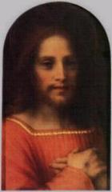
“Toda autoridade sobre o Céu e sobre a Terra Me foi entregue. Ide, portanto, e fazei que todas as nações se tornem discípulos, batizando-as em nome do PAI, do FILHO e do ESPÍRITO SANTO e ensinando-as a observar tudo quanto vos ordenei. E eis que EU estou convosco todos os dias até a consumação dos séculos”.(Mt 28, 18-20)
Mandou que eles participassem da Festa da Colheita em Jerusalém, que anualmente era celebrada 50 dias após a Festa da Páscoa, pois naquele dia iam receber o ESPÍRITO SANTO em plenitude, como de fato aconteceu. Assim, no dia da Festa da Colheita, reunidos naquela mesma sala, no Cenáculo em Jerusalém, onde juntos fizeram a Última Ceia, o ESPÍRITO SANTO desceu sobre os Apóstolos e Nossa Senhora, derramando graças especiais sob suas cabeças em forma de línguas de fogo, iluminando-lhes a mente para que compreendessem a Obra de JESUS, o que ELE representava, Sua Personalidade, Seu empenho e Dedicação, Sua Obediência ao PAI ETERNO, como NELE se cumpriam as Escrituras, a profundidade de Seus Ensinamentos e a missão que deixou para cada um deles, dilatar e impulsionar a Igreja que acabava de nascer.
Todavia, antes da Festa da Colheita, estando eles ainda na Galiléia, por recomendação DELE, retornaram a Jerusalém 10 dias antes daquela Celebração, ou seja, 10 dias antes do Dia de Pentecostes. E assim, reunidos com JESUS num local combinado no Monte das Oliveiras, receberam as últimas instruções e ensinamentos. A seguir, o SENHOR despediu-se de todos e elevou-se aos Céus.
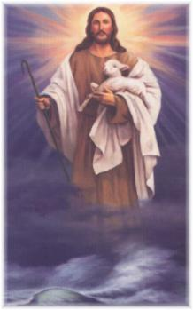

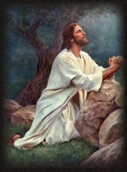
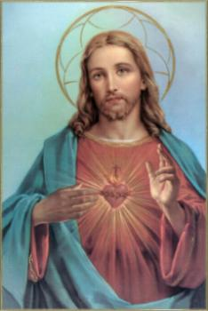